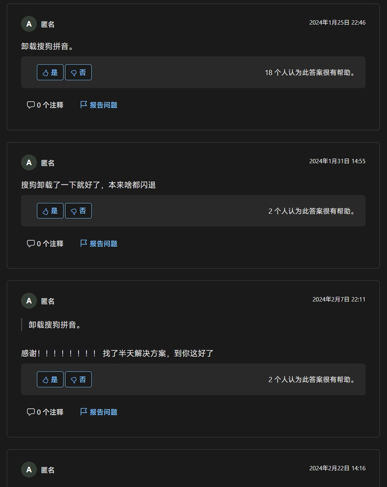

windows explorer 频繁崩溃 桌面黑屏
问题描述
windows explorer 频繁崩溃，导致桌面黑屏，几秒后恢复，所有打开的文件夹都要自己再次打开。
在事件查看器抓到了异常：
程序explorer.exe版本10.0.22621.5547停止与 Windows 交互并已关闭。若要查看有关此问题的详细信息是否可用，请查看安全性与维护控制面板中的问题历史记录
1 | |
后来我又多次捕捉到了 explorer 崩溃的事件：
问题均指向 CoreMessaging.dll，但一番搜索后，发现并没有找到解决方案。
最终使用的解决方案：
卸载搜狗输入法
Explorer.exe 反复崩溃 错误模块ntdll.dll

解决方法
卸载杀毒软件
搜索到 微软上的一文章
About two weeks ago I started having issues on my laptop with windows explorer.exe. I would be using my laptop and try to click on an icon on my task bar and it would not respond. The whole thing would be frozen including even the clock. If I clicked on it a couple times it would restart on it’s own. I started looking into it and have tried all kinds of suggestions to try to figure out what might be causing it.
从文中基本确定是电脑上自己安装的软件问题。文中给出的解决方案：
- 卸载 Mcfee 杀毒软件（我没有安装，同时原作者表示无效）
- 重装系统
- 与组策略有关，原作者表示无力追踪。
- 最终原作者重装了系统。
关闭虚拟化
user-experiencing-frequent-hangs 指出
- 关闭 CPU 虚拟化（但是我要用虚拟机）
显卡驱动
win-11-explorer-hangs-crashes 指出：
- 更新显卡驱动（但此问题已困扰我很久，期间更新过数次显卡驱动）
使用“系统配置”
知乎一篇文章 指出：
- 搜索框搜索“系统配置”，禁用以下项目
- server 服务
- google LLC 更新程序
- 卸载微软电脑管家
实操结果：无效。
执行 sfc
- 运行
Sfc /scannow（我的没有发现异常）
搜狗输入法
Explorer.exe 反复崩溃 错误模块ntdll.dll 下面的评论指出：
- 卸载搜狗拼音输入法